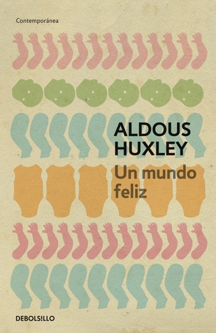

Un mundo feliz
Reseña por Jorge I. Zuluaga

Ver detalles · Ver reseña en GoodReads (necesita cuenta)
Demasiado sobrevalorado como clásico y un verdadero desastre como obra literaria.
Seguro que lo que estoy diciendo debe ser un sacrilegio para todos los fordianos que aman esta novela, y muchos de ellos se echarán la bendición en el estómago mientras leen esta reseñita; pero si de verdad aprecian su tiempo y no están obligados a leer tonterías, busquen otra obra.
La primera impresión que me llevé al terminar los primeros tres o cuatro capítulos es que el libro parecía la tarea de un escolar que había sido alargada para convertirse, por el aplauso de un grupo de fans de las historias retorcidas y sin sentido, en un clásico.
Casi nada funciona en esta novela. La realidad que plantea es completamente artificiosa, tanto desde el punto de vista biológico o psicológico como desde el punto de vista sociológico.
Entiendo que pretende ser una novela distópica (aunque yo diría que es de corte utópico), pero incluso en este género espera uno algo de verosimilitud, de la que este libro carece casi completamente.
Los nombres de los personajes son completamente ridículos; repito, como los que le pondría un escolar a los personajes de un cuento inventado para una tarea. Los escenarios, las situaciones, casi todo es pueril.
Que no se entienda mi evaluación negativa de esta novelita como un rechazo moralista del mundo que describe. Precisamente es por eso que es considerado una distopía, aunque, justamente en una evaluación moralmente más neutral, yo considero que en otras cosas (tal vez muy pocas) es una utopía. Sin embargo, algunos aspectos de esa sociedad, en particular la eugenesia y el racismo exacerbado, son verdaderamente odiosos, y el mismo Huxley en el prólogo parece admitir que no le parecen tan malos.
Para mí es obvio que una sociedad que diera más libertad sexual a todas las personas, en especial a las mujeres, es deseable. Pero no de la manera en la que la plantea Huxley: un mundo en que las mujeres al fin son libres sexualmente, pero también son poco más que muñecas inflables —o neumáticas, como las llama la novela—; muñecas que, como pasa con los estereotipos femeninos en el mundo de entonces y en el actual, están más pendientes de la satisfacción de los miembros alfa (que además eran todos hombres, puf) que de ellas mismas.
En fin. No sé qué le han visto a esta novela para que siga dando tanto de qué hablar. Superémosla.